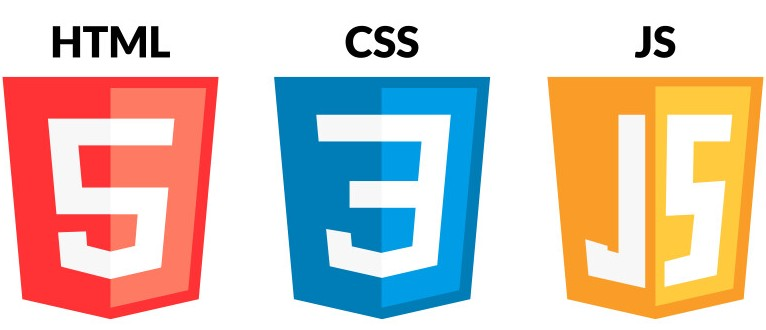

Hi, I'm Amol Mane
A passionate

Work Experience

Virtual File System
A customised Virtual File System (CVFS) implemented in C. Simulates Linux-like file system
operations with a custom shell interface. Focuses on OS internals, system calls, file handling,
and memory management.

Generalised Data Structures Library
Generalised Data Structures Library in C++ using templates. Includes linear & non-linear data
structures (Linked Lists, Stack, Queue, BST) and algorithms (Searching & Sorting). Designed as a
reusable, generic, and object-oriented library for learning and development.

File Packer-Unpacker
File_Packer_Unpacker is a Java-based file utility tool that provides functionality for packing
multiple files into a single archive and unpacking them back with all metadata preserved.To
enhance security, the packed file is encrypted, and only authorized users can decrypt & extract
the data.The project also features a Graphical User Interface (GUI) for user-friendly
interaction.
Chat Messenger
This project is a Java-based peer-to-peer chat application that enables real-time text-based
communication between users using Java Socket Programming. Along with providing basic chat
functionality, it also maintains a log file that records all conversation details in a periodic
fashion for future reference.The application is platform and architecture independent, running
on any system with a Java Runtime Environment (JRE).
Customized Database Management System
Implements a Database Management System without using actual Database Management System.
Implemented own logic for all the SQL Queries. We can perform CRUD operations as well as
Aggregate operations. Implemented Java's Collections Framework and Serialization. Persist data
between program runs using serialization.

Amol's Developer Portfolio
A fully responsive personal portfolio website built using HTML, CSS, and JavaScript. It
showcases my skills, projects, and resume with smooth navigation and clean UI/UX. Implemented a
dynamic project gallery and integrated external links (LinkedIn, GitHub, Resume) for easy
access.